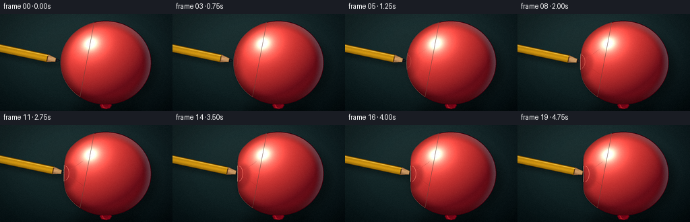
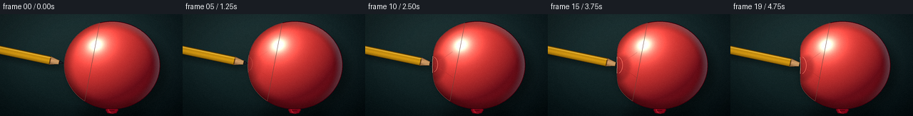
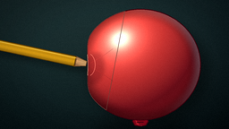
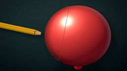
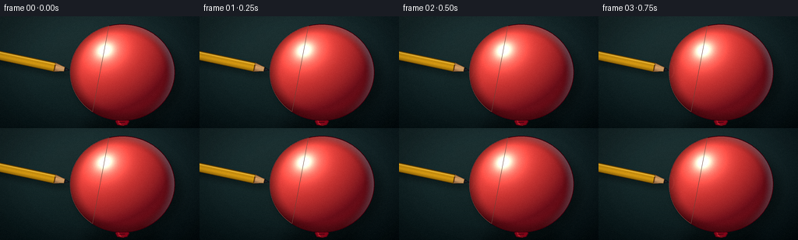
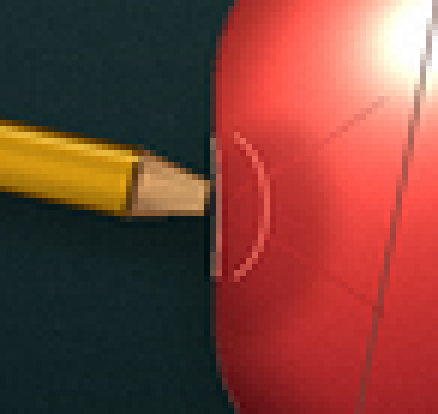
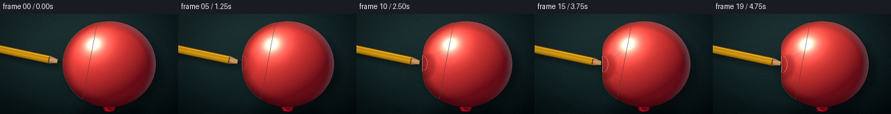
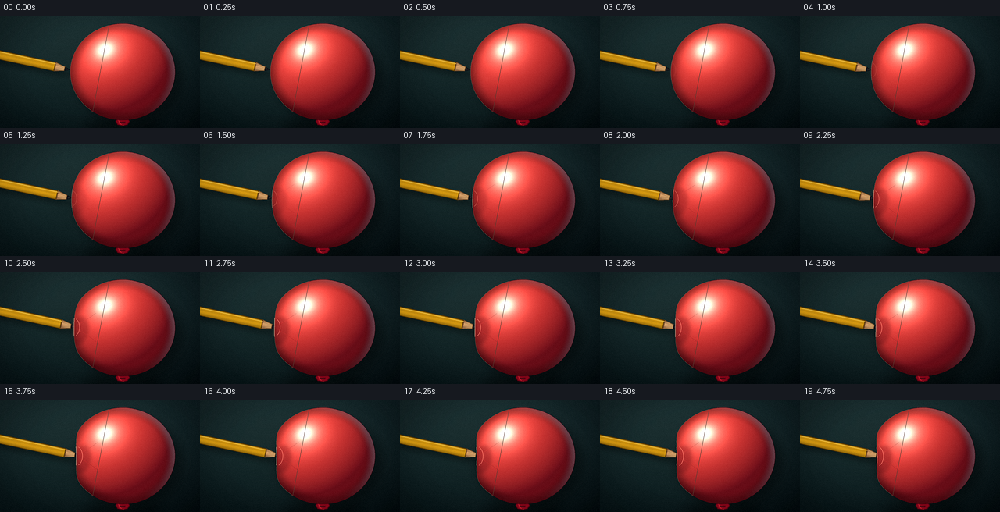
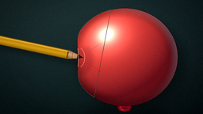
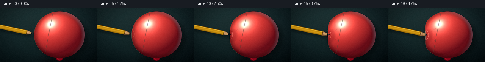

CODING AGENTS AS PIXEL WORLD MODELS
traex/DeepSeek-V4.1-Flash · phygen_025
点击播放 · 原生 RGB 像素
逐轮保存的候选
回放视频、检查图与代码变化。
每份候选均可单独播放。实际图片检查记录在下方工具轨迹中。
候选 01播放与检查图
点击播放 · 原生 RGB 像素

展开代码变化
--- 上一保存版本
+++ 本次保存版本
@@ -0,0 +1,470 @@
+from pathlib import Path
+import argparse
+import math
+
+import numpy as np
+from PIL import Image, ImageDraw, ImageFilter
+
+import artifact_io
+
+
+ROOT = Path(__file__).resolve().parent
+W, H = 256, 144
+N, FPS = 20, 4
+S = 4
+RW, RH = W * S, H * S
+
+# Balloon geometry in output-pixel coordinates.
+CX, CY = 157.0, 72.0
+RX, RY = 67.0, 62.0
+PENCIL_ANGLE = math.radians(12.0)
+PENCIL_HALF = 6.0
+WOOD_LEN = 20.0
+GRAPHITE_LEN = 7.0
+GRAPHITE_HALF = 2.8
+TIP0_X, TIP0_Y = 89.8, 69.5
+TIP_TRAVEL = 14.0
+
+
+def smoothstep(a, b, x):
+ t = np.clip((x - a) / (b - a), 0.0, 1.0)
+ return t * t * (3.0 - 2.0 * t)
+
+
+def local_xy(origin, u, v):
+ d = np.array([math.cos(PENCIL_ANGLE), math.sin(PENCIL_ANGLE)])
+ n = np.array([-math.sin(PENCIL_ANGLE), math.cos(PENCIL_ANGLE)])
+ p = np.asarray(origin, dtype=np.float64) + u * d + v * n
+ return float(p[0]), float(p[1])
+
+
+def pencil_polygon(tip, u0, u1, half0, half1=None, offset=(0.0, 0.0)):
+ if half1 is None:
+ half1 = half0
+ origin = (tip[0] + offset[0], tip[1] + offset[1])
+ points = [
+ local_xy(origin, u0, -half0),
+ local_xy(origin, u1, -half1),
+ local_xy(origin, u1, half1),
+ local_xy(origin, u0, half0),
+ ]
+ return [(int(round(x * S)), int(round(y * S))) for x, y in points]
+
+
+def tip_position(index):
+ raw = index / (N - 1)
+ eased = 0.18 * raw + 0.82 * (raw * raw * (3.0 - 2.0 * raw))
+ x = TIP0_X + TIP_TRAVEL * eased
+ y = TIP0_Y + (x - TIP0_X) * math.tan(PENCIL_ANGLE)
+ return x, y, eased
+
+
+def make_background():
+ yy, xx = np.mgrid[0:RH, 0:RW].astype(np.float32)
+ xn = xx / (RW - 1)
+ yn = yy / (RH - 1)
+
+ top_left = np.array([31.0, 51.0, 54.0], dtype=np.float32)
+ top_right = np.array([20.0, 38.0, 44.0], dtype=np.float32)
+ bottom_left = np.array([12.0, 27.0, 31.0], dtype=np.float32)
+ bottom_right = np.array([7.0, 16.0, 21.0], dtype=np.float32)
+
+ top = top_left[None, None, :] * (1.0 - xn[..., None]) + top_right[None, None, :] * xn[..., None]
+ bottom = bottom_left[None, None, :] * (1.0 - xn[..., None]) + bottom_right[None, None, :] * xn[..., None]
+ bg = top * (1.0 - yn[..., None]) + bottom * yn[..., None]
+
+ # A soft pool of light separates the balloon from the seamless backdrop.
+ gx = (xn - 0.57) / 0.40
+ gy = (yn - 0.44) / 0.52
+ glow = np.exp(-0.5 * (gx * gx + gy * gy)).astype(np.float32)
+ bg += glow[..., None] * np.array([9.0, 11.0, 7.0], dtype=np.float32)
+
+ radius = np.sqrt(((xn - 0.5) * 1.12) ** 2 + ((yn - 0.5) * 0.94) ** 2)
+ vignette = 1.0 - 0.30 * smoothstep(0.30, 0.80, radius)
+ bg *= vignette[..., None]
+
+ rng = np.random.default_rng(12)
+ noise = rng.normal(0.0, 1.0, (RH, RW)).astype(np.float32)
+ noise_img = Image.fromarray(np.clip(noise * 18.0 + 128.0, 0, 255).astype(np.uint8), "L")
+ noise_img = noise_img.filter(ImageFilter.GaussianBlur(1.2 * S))
+ smooth_noise = (np.asarray(noise_img, dtype=np.float32) - 128.0) / 18.0
+ bg += smooth_noise[..., None] * 1.25
+ return Image.fromarray(np.clip(bg, 0, 255).astype(np.uint8), "RGB").convert("RGBA")
+
+
+BACKGROUND = make_background()
+
+
+def add_cast_shadows(canvas):
+ layer = Image.new("RGBA", (RW, RH), (0, 0, 0, 0))
+ draw = ImageDraw.Draw(layer)
+
+ # Broad object shadow and the small grounded shadow under the knot.
+ draw.ellipse(
+ (
+ int((CX + 9 - RX * 1.02) * S),
+ int((CY + 9 - RY * 0.94) * S),
+ int((CX + 9 + RX * 1.02) * S),
+ int((CY + 9 + RY * 0.94) * S),
+ ),
+ fill=(0, 0, 0, 92),
+ )
+ draw.ellipse(
+ (int(103 * S), int(133 * S), int(211 * S), int(146 * S)),
+ fill=(0, 0, 0, 90),
+ )
+ layer = layer.filter(ImageFilter.GaussianBlur(6.0 * S))
+ canvas.alpha_composite(layer)
+
+
+def add_pencil_shadow(canvas, tip):
+ layer = Image.new("RGBA", (RW, RH), (0, 0, 0, 0))
+ draw = ImageDraw.Draw(layer)
+ off = (5.5, 7.0)
+ draw.polygon(pencil_polygon(tip, -320.0, -WOOD_LEN, PENCIL_HALF, offset=off), fill=(0, 0, 0, 72))
+ draw.polygon(
+ pencil_polygon(tip, -WOOD_LEN, -GRAPHITE_LEN, PENCIL_HALF, GRAPHITE_HALF, offset=off),
+ fill=(0, 0, 0, 62),
+ )
+ draw.polygon(
+ pencil_polygon(tip, -GRAPHITE_LEN, 0.0, GRAPHITE_HALF, 0.0, offset=off),
+ fill=(0, 0, 0, 50),
+ )
+ layer = layer.filter(ImageFilter.GaussianBlur(3.0 * S))
+ canvas.alpha_composite(layer)
+
+
+def draw_pencil(canvas, tip):
+ yy, xx = np.mgrid[0:RH, 0:RW].astype(np.float32)
+ dx, dy = math.cos(PENCIL_ANGLE), math.sin(PENCIL_ANGLE)
+ nx, ny = -dy, dx
+ u = (xx / S - tip[0]) * dx + (yy / S - tip[1]) * dy
+ v = (xx / S - tip[0]) * nx + (yy / S - tip[1]) * ny
+
+ layer = Image.new("RGBA", (RW, RH), (0, 0, 0, 0))
+
+ # Yellow lacquered shaft, shaded across its hexagonal cross-section.
+ shaft_mask = Image.new("L", (RW, RH), 0)
+ ImageDraw.Draw(shaft_mask).polygon(
+ pencil_polygon(tip, -320.0, -WOOD_LEN, PENCIL_HALF), fill=255
+ )
+ mask = np.asarray(shaft_mask, dtype=np.float32) / 255.0
+ vn = np.clip(v / PENCIL_HALF, -1.0, 1.0)
+ shade = 0.80 - 0.25 * np.abs(vn) ** 1.5
+ shade += 0.20 * np.exp(-((vn + 0.58) / 0.16) ** 2)
+ shade += 0.07 * np.exp(-((vn - 0.16) / 0.22) ** 2)
+ shade = np.clip(shade, 0.40, 1.15)
+ shaft_rgb = np.array([238.0, 171.0, 26.0], dtype=np.float32)[None, None, :] * shade[..., None]
+ shaft_rgb += np.array([10.0, 8.0, 0.0], dtype=np.float32)
+ shaft = np.zeros((RH, RW, 4), dtype=np.uint8)
+ shaft[..., :3] = np.clip(shaft_rgb, 0, 255).astype(np.uint8)
+ shaft[..., 3] = (mask * 255.0).astype(np.uint8)
+ layer.alpha_composite(Image.fromarray(shaft, "RGBA"))
+
+ # Fine facet lines keep the shaft readable without looking outlined.
+ facet = Image.new("RGBA", (RW, RH), (0, 0, 0, 0))
+ fd = ImageDraw.Draw(facet)
+ for vv, alpha in ((-3.35, 55), (0.9, 38), (4.25, 62)):
+ p0 = local_xy(tip, -320.0, vv)
+ p1 = local_xy(tip, -WOOD_LEN, vv)
+ fd.line([(p0[0] * S, p0[1] * S), (p1[0] * S, p1[1] * S)], fill=(96, 59, 4, alpha), width=max(1, S // 2))
+ layer.alpha_composite(facet)
+
+ # Sharpened wood cone.
+ wood_mask = Image.new("L", (RW, RH), 0)
+ wood_poly = pencil_polygon(tip, -WOOD_LEN, -GRAPHITE_LEN, PENCIL_HALF, GRAPHITE_HALF)
+ ImageDraw.Draw(wood_mask).polygon(wood_poly, fill=255)
+ wm = np.asarray(wood_mask, dtype=np.float32) / 255.0
+ half_at_u = GRAPHITE_HALF + (PENCIL_HALF - GRAPHITE_HALF) * np.clip(
+ (u + WOOD_LEN) / (WOOD_LEN - GRAPHITE_LEN), 0.0, 1.0
+ )
+ wvn = np.clip(v / np.maximum(half_at_u, 0.1), -1.0, 1.0)
+ wood_shade = 0.78 + 0.18 * (1.0 - wvn * wvn) - 0.12 * np.clip(wvn, 0, 1)
+ wood_rgb = np.array([211.0, 166.0, 111.0], dtype=np.float32)[None, None, :] * wood_shade[..., None]
+ wood_rgb[..., 0] += 12.0 * (1.0 - np.clip((u + WOOD_LEN) / 13.0, 0, 1))
+ wood = np.zeros((RH, RW, 4), dtype=np.uint8)
+ wood[..., :3] = np.clip(wood_rgb, 0, 255).astype(np.uint8)
+ wood[..., 3] = (wm * 255.0).astype(np.uint8)
+ layer.alpha_composite(Image.fromarray(wood, "RGBA"))
+
+ grain = Image.new("RGBA", (RW, RH), (0, 0, 0, 0))
+ gd = ImageDraw.Draw(grain)
+ for vv in (-2.5, 0.2, 2.2):
+ p0 = local_xy(tip, -WOOD_LEN + 1.2, vv)
+ p1 = local_xy(tip, -GRAPHITE_LEN - 0.6, vv * 0.47)
+ gd.line(
+ [(p0[0] * S, p0[1] * S), (p1[0] * S, p1[1] * S)],
+ fill=(112, 72, 38, 92),
+ width=max(1, S // 2),
+ )
+ grain.putalpha(Image.fromarray((np.asarray(grain.getchannel("A")) * wm).astype(np.uint8), "L"))
+ layer.alpha_composite(grain)
+
+ # Graphite point.
+ graphite_mask = Image.new("L", (RW, RH), 0)
+ graph_poly = pencil_polygon(tip, -GRAPHITE_LEN, 0.0, GRAPHITE_HALF, 0.0)
+ ImageDraw.Draw(graphite_mask).polygon(graph_poly, fill=255)
+ gm = np.asarray(graphite_mask, dtype=np.float32) / 255.0
+ gvn = np.clip(v / np.maximum(GRAPHITE_HALF * np.clip((u + GRAPHITE_LEN) / GRAPHITE_LEN, 0, 1), 0.12), -1, 1)
+ graphite_shade = 0.72 + 0.20 * np.exp(-((gvn + 0.45) / 0.28) ** 2)
+ graphite_rgb = np.array([39.0, 44.0, 51.0], dtype=np.float32)[None, None, :] * graphite_shade[..., None]
+ graphite_rgb += 6.0 * (1.0 - np.clip((u + GRAPHITE_LEN) / GRAPHITE_LEN, 0, 1))[..., None]
+ graphite = np.zeros((RH, RW, 4), dtype=np.uint8)
+ graphite[..., :3] = np.clip(graphite_rgb, 0, 255).astype(np.uint8)
+ graphite[..., 3] = (gm * 255.0).astype(np.uint8)
+ layer.alpha_composite(Image.fromarray(graphite, "RGBA"))
+
+ # Crisp silhouettes, with an extra highlight on the upper facet.
+ outline = Image.new("RGBA", (RW, RH), (0, 0, 0, 0))
+ od = ImageDraw.Draw(outline)
+ od.polygon(pencil_polygon(tip, -320.0, -WOOD_LEN, PENCIL_HALF), outline=(69, 42, 4, 190), width=max(1, S))
+ od.polygon(wood_poly, outline=(88, 54, 25, 170), width=max(1, S))
+ od.polygon(graph_poly, outline=(15, 18, 22, 210), width=max(1, S))
+ p0 = local_xy(tip, -310.0, -3.95)
+ p1 = local_xy(tip, -WOOD_LEN + 0.5, -3.95)
+ od.line([(p0[0] * S, p0[1] * S), (p1[0] * S, p1[1] * S)], fill=(255, 225, 121, 120), width=max(1, S))
+ layer.alpha_composite(outline)
+ canvas.alpha_composite(layer)
+
+
+def balloon_polygon(tip_x, tip_y, amount):
+ theta = np.linspace(0.0, 2.0 * math.pi, 900, endpoint=False)
+ theta_c = math.atan2((tip_y - CY) / RY, -1.0)
+ dtheta = np.arctan2(np.sin(theta - theta_c), np.cos(theta - theta_c))
+ dent = np.exp(-((dtheta / 0.43) ** 2))
+ shoulder = np.exp(-(((np.abs(dtheta) - 0.56) / 0.19) ** 2))
+ radial = amount * dent - 0.10 * amount * shoulder
+ x = CX + (RX - radial) * np.cos(theta)
+ y = CY + (RY - 0.30 * radial) * np.sin(theta)
+ return x, y, theta, theta_c
+
+
+def draw_knot(canvas):
+ layer = Image.new("RGBA", (RW, RH), (0, 0, 0, 0))
+ d = ImageDraw.Draw(layer)
+ knot = [
+ (151.0, 131.5),
+ (147.6, 135.2),
+ (150.4, 140.1),
+ (157.0, 141.4),
+ (163.4, 140.2),
+ (166.3, 135.4),
+ (163.0, 131.5),
+ ]
+ d.polygon([(x * S, y * S) for x, y in knot], fill=(129, 9, 28, 255), outline=(82, 5, 18, 235), width=max(1, S))
+ d.polygon(
+ [(151.2 * S, 132.8 * S), (154.0 * S, 136.8 * S), (156.0 * S, 140.2 * S), (152.6 * S, 138.8 * S)],
+ fill=(206, 31, 46, 210),
+ )
+ d.line([(153.0 * S, 136.5 * S), (160.4 * S, 136.1 * S)], fill=(83, 4, 17, 180), width=max(1, S))
+ d.line([(156.2 * S, 138.2 * S), (158.5 * S, 140.5 * S)], fill=(229, 57, 60, 125), width=max(1, S // 2))
+ canvas.alpha_composite(layer)
+
+
+def draw_balloon(canvas, tip_x, tip_y, amount, progress):
+ draw_knot(canvas)
+ bx, by, theta, theta_c = balloon_polygon(tip_x, tip_y, amount)
+ mask_img = Image.new("L", (RW, RH), 0)
+ poly = [(int(round(x * S)), int(round(y * S))) for x, y in zip(bx, by)]
+ ImageDraw.Draw(mask_img).polygon(poly, fill=255)
+ mask = np.asarray(mask_img, dtype=np.float32) / 255.0
+
+ yy, xx = np.mgrid[0:RH, 0:RW].astype(np.float32)
+ nx = (xx / S - CX) / RX
+ ny = (yy / S - CY) / RY
+ q = np.clip(np.sqrt(nx * nx + ny * ny), 0.0, 1.0)
+ nz = np.sqrt(np.maximum(0.0, 1.0 - q * q))
+
+ light = np.array([-0.46, -0.58, 0.67], dtype=np.float32)
+ light /= np.linalg.norm(light)
+ diffuse = np.clip(nx * light[0] + ny * light[1] + nz * light[2], 0.0, 1.0)
+ intensity = 0.17 + 0.83 * diffuse
+
+ dark = np.array([74.0, 5.0, 19.0], dtype=np.float32)
+ bright = np.array([255.0, 77.0, 68.0], dtype=np.float32)
+ rgb = dark[None, None, :] + (bright - dark)[None, None, :] * intensity[..., None]
+ rgb *= (1.0 - 0.30 * smoothstep(0.76, 1.0, q))[..., None]
+
+ half = np.array([-0.34, -0.46, 0.82], dtype=np.float32)
+ half /= np.linalg.norm(half)
+ ndoth = np.clip(nx * half[0] + ny * half[1] + nz * half[2], 0.0, 1.0)
+ spec = 0.48 * ndoth ** 15 + 0.72 * ndoth ** 68
+ rgb += spec[..., None] * np.array([255.0, 219.0, 190.0], dtype=np.float32)
+
+ # A restrained cool rim separates the red balloon from the teal set.
+ rim = smoothstep(0.82, 1.0, q) * np.clip(nx * 0.68 - ny * 0.30, 0.0, 1.0)
+ rgb += rim[..., None] * np.array([38.0, 72.0, 76.0], dtype=np.float32)
+
+ # Slight latex micro-texture, strongest in the mid-tones.
+ rng = np.random.default_rng(29)
+ tex = rng.normal(0.0, 1.0, (RH, RW)).astype(np.float32)
+ tex_img = Image.fromarray(np.clip(tex * 20.0 + 128.0, 0, 255).astype(np.uint8), "L")
+ tex_img = tex_img.filter(ImageFilter.GaussianBlur(0.75 * S))
+ tex = (np.asarray(tex_img, dtype=np.float32) - 128.0) / 20.0
+ rgb += tex[..., None] * (1.4 * (1.0 - 0.45 * spec[..., None]))
+
+ balloon = np.zeros((RH, RW, 4), dtype=np.uint8)
+ balloon[..., :3] = np.clip(rgb, 0, 255).astype(np.uint8)
+ balloon[..., 3] = (mask * 255.0).astype(np.uint8)
+ layer = Image.fromarray(balloon, "RGBA")
+
+ d = ImageDraw.Draw(layer)
+ d.line(poly + [poly[0]], fill=(69, 3, 15, 218), width=max(1, S))
+
+ # A narrow warm edge light follows the upper-left shoulder.
+ edge_idx = np.where(
+ ((theta > 2.18) & (theta < 4.45))
+ | (np.abs(np.arctan2(np.sin(theta - theta_c), np.cos(theta - theta_c))) < 0.23)
+ )[0]
+ if len(edge_idx) > 1:
+ edge_pts = [(poly[i][0], poly[i][1]) for i in edge_idx]
+ edge_pts.append(edge_pts[0])
+ d.line(edge_pts, fill=(255, 137, 111, 100), width=max(1, int(0.65 * S)))
+
+ canvas.alpha_composite(layer)
+ return mask, bx, by, theta, theta_c
+
+
+def rotated_ellipse_polygon(cx, cy, rx, ry, angle, steps=80):
+ t = np.linspace(0.0, 2.0 * math.pi, steps, endpoint=False)
+ x = rx * np.cos(t)
+ y = ry * np.sin(t)
+ ca, sa = math.cos(angle), math.sin(angle)
+ return [((cx + x[i] * ca - y[i] * sa) * S, (cy + x[i] * sa + y[i] * ca) * S) for i in range(steps)]
+
+
+def add_contact_effects(canvas, mask, bx, by, theta, theta_c, tip_x, tip_y, progress):
+ if progress <= 0.015:
+ return
+ contact_x = float(np.interp(theta_c, theta, bx, period=2.0 * math.pi))
+ contact_y = float(np.interp(theta_c, theta, by, period=2.0 * math.pi))
+
+ overlay = Image.new("RGBA", (RW, RH), (0, 0, 0, 0))
+ d = ImageDraw.Draw(overlay)
+
+ shadow = Image.new("RGBA", (RW, RH), (0, 0, 0, 0))
+ sd = ImageDraw.Draw(shadow)
+ sd.polygon(
+ rotated_ellipse_polygon(contact_x + 7.0, contact_y + 4.0, 11.0, 18.0, PENCIL_ANGLE, 96),
+ fill=(49, 2, 12, int(68 * min(1.0, progress * 2.0))),
+ )
+ shadow = shadow.filter(ImageFilter.GaussianBlur(2.2 * S))
+ overlay.alpha_composite(shadow)
+
+ # Short tension lines fan out from the indentation.
+ alpha = int(52 * min(1.0, progress * 2.2))
+ for sign in (-1.0, 1.0):
+ pts = []
+ for k in range(14):
+ f = k / 13.0
+ x = contact_x + 3.0 + 25.0 * f
+ y = contact_y + sign * (2.2 + 13.0 * f + 3.0 * f * f)
+ pts.append((x * S, y * S))
+ d.line(pts, fill=(91, 5, 20, alpha), width=max(1, S // 2))
+
+ # A stretched latex ring and a tiny darker puncture crease.
+ ring_r = 6.2 + 2.0 * progress
+ ring_box = (
+ int((contact_x - ring_r) * S),
+ int((contact_y - ring_r * 1.55) * S),
+ int((contact_x + ring_r) * S),
+ int((contact_y + ring_r * 1.55) * S),
+ )
+ d.arc(
+ ring_box,
+ start=-70,
+ end=70,
+ fill=(255, 161, 139, int(110 * min(1.0, progress * 1.8))),
+ width=max(1, int(0.75 * S)),
+ )
+ d.arc(
+ ring_box,
+ start=110,
+ end=250,
+ fill=(84, 3, 17, int(110 * min(1.0, progress * 1.8))),
+ width=max(1, S // 2),
+ )
+
+ ov = np.asarray(overlay, dtype=np.float32)
+ ov[..., 3] *= mask
+ overlay = Image.fromarray(ov.astype(np.uint8), "RGBA")
+ canvas.alpha_composite(overlay)
+
+ # Highlight the deformed contour itself, including where it wraps the tip.
+ seg = np.where(np.abs(np.arctan2(np.sin(theta - theta_c), np.cos(theta - theta_c))) < 0.20)[0]
+ if len(seg) > 1:
+ pts = [((bx[i]) * S, (by[i]) * S) for i in seg]
+ edge_layer = Image.new("RGBA", (RW, RH), (0, 0, 0, 0))
+ ImageDraw.Draw(edge_layer).line(
+ pts,
+ fill=(255, 180, 151, int(120 * min(1.0, progress * 2.0))),
+ width=max(1, S),
+ )
+ canvas.alpha_composite(edge_layer)
+
+
+def finish_frame(canvas, index):
+ arr = np.asarray(canvas.convert("RGB"), dtype=np.float32) / 255.0
+ lum = arr[..., 0] * 0.2126 + arr[..., 1] * 0.7152 + arr[..., 2] * 0.0722
+ bloom_mask = np.clip((lum - 0.74) * 4.0, 0.0, 1.0)[..., None]
+ bloom_img = Image.fromarray(np.clip(arr * bloom_mask * 255.0, 0, 255).astype(np.uint8), "RGB")
+ bloom_img = bloom_img.filter(ImageFilter.GaussianBlur(5.0 * S))
+ bloom = np.asarray(bloom_img, dtype=np.float32) / 255.0
+ arr = 1.0 - (1.0 - arr) * (1.0 - bloom * 0.18)
+
+ xn = np.linspace(0.0, 1.0, RW, dtype=np.float32)
+ yn = np.linspace(0.0, 1.0, RH, dtype=np.float32)
+ vx, vy = np.meshgrid(xn, yn)
+ radius = np.sqrt(((vx - 0.5) * 1.10) ** 2 + ((vy - 0.5) * 0.94) ** 2)
+ arr *= (1.0 - 0.13 * smoothstep(0.34, 0.82, radius))[..., None]
+ arr = np.clip((arr - 0.5) * 1.035 + 0.5, 0.0, 1.0)
+
+ image = Image.fromarray((arr * 255.0 + 0.5).astype(np.uint8), "RGB")
+ image = image.resize((W, H), Image.Resampling.LANCZOS)
+ image = image.filter(ImageFilter.UnsharpMask(radius=0.6, percent=62, threshold=2))
+
+ rng = np.random.default_rng(200 + index)
+ grain = rng.normal(0.0, 1.0, (H, W, 1)).astype(np.float32) * 1.15
+ out = np.asarray(image, dtype=np.float32) + grain
+ return np.clip(out, 0, 255).astype(np.uint8)
+
+
+def render_frame(index):
+ tip_x, tip_y, progress = tip_position(index)
+ amount = 0.60 * (tip_x - TIP0_X)
+ canvas = BACKGROUND.copy()
+ add_cast_shadows(canvas)
+ add_pencil_shadow(canvas, (tip_x, tip_y))
+ draw_pencil(canvas, (tip_x, tip_y))
+ mask, bx, by, theta, theta_c = draw_balloon(canvas, tip_x, tip_y, amount, progress)
+ add_contact_effects(canvas, mask, bx, by, theta, theta_c, tip_x, tip_y, progress)
+ return finish_frame(canvas, index)
+
+
+def render_all():
+ return np.stack([render_frame(i) for i in range(N)], axis=0)
+
+
+def save_preview(frames):
+ picks = [0, 5, 10, 15, 19]
+ sheet = Image.new("RGB", (W * len(picks), H + 20), (24, 28, 34))
+ draw = ImageDraw.Draw(sheet)
+ for i, frame_index in enumerate(picks):
+ draw.text((i * W + 4, 3), f"frame {frame_index:02d} / {frame_index / FPS:.2f}s", fill=(238, 240, 242))
+ sheet.paste(Image.fromarray(frames[frame_index]), (i * W, 20))
+ sheet.save(ROOT / "preview.png")
+
+
+def main():
+ parser = argparse.ArgumentParser()
+ parser.add_argument("--preview", action="store_true")
+ args = parser.parse_args()
+ frames = render_all()
+ if args.preview:
+ save_preview(frames)
+ artifact_io.save(frames, ROOT)
+ print(f"saved {len(frames)} frames at {W}x{H}, {FPS} fps")
+
+
+if __name__ == "__main__":
+ main()
候选 02播放与检查图
点击播放 · 原生 RGB 像素

展开代码变化
--- 上一保存版本
+++ 本次保存版本
@@ -23,7 +23,7 @@
GRAPHITE_LEN = 7.0
GRAPHITE_HALF = 2.8
TIP0_X, TIP0_Y = 89.8, 69.5
-TIP_TRAVEL = 14.0
+TIP_TRAVEL = 15.0
def smoothstep(a, b, x):
@@ -85,11 +85,11 @@
rng = np.random.default_rng(12)
noise = rng.normal(0.0, 1.0, (RH, RW)).astype(np.float32)
- noise_img = Image.fromarray(np.clip(noise * 18.0 + 128.0, 0, 255).astype(np.uint8), "L")
+ noise_img = Image.fromarray(np.clip(noise * 18.0 + 128.0, 0, 255).astype(np.uint8))
noise_img = noise_img.filter(ImageFilter.GaussianBlur(1.2 * S))
smooth_noise = (np.asarray(noise_img, dtype=np.float32) - 128.0) / 18.0
bg += smooth_noise[..., None] * 1.25
- return Image.fromarray(np.clip(bg, 0, 255).astype(np.uint8), "RGB").convert("RGBA")
+ return Image.fromarray(np.clip(bg, 0, 255).astype(np.uint8)).convert("RGBA")
BACKGROUND = make_background()
@@ -159,7 +159,7 @@
shaft = np.zeros((RH, RW, 4), dtype=np.uint8)
shaft[..., :3] = np.clip(shaft_rgb, 0, 255).astype(np.uint8)
shaft[..., 3] = (mask * 255.0).astype(np.uint8)
- layer.alpha_composite(Image.fromarray(shaft, "RGBA"))
+ layer.alpha_composite(Image.fromarray(shaft))
# Fine facet lines keep the shaft readable without looking outlined.
facet = Image.new("RGBA", (RW, RH), (0, 0, 0, 0))
@@ -185,7 +185,7 @@
wood = np.zeros((RH, RW, 4), dtype=np.uint8)
wood[..., :3] = np.clip(wood_rgb, 0, 255).astype(np.uint8)
wood[..., 3] = (wm * 255.0).astype(np.uint8)
- layer.alpha_composite(Image.fromarray(wood, "RGBA"))
+ layer.alpha_composite(Image.fromarray(wood))
grain = Image.new("RGBA", (RW, RH), (0, 0, 0, 0))
gd = ImageDraw.Draw(grain)
@@ -197,7 +197,7 @@
fill=(112, 72, 38, 92),
width=max(1, S // 2),
)
- grain.putalpha(Image.fromarray((np.asarray(grain.getchannel("A")) * wm).astype(np.uint8), "L"))
+ grain.putalpha(Image.fromarray((np.asarray(grain.getchannel("A")) * wm).astype(np.uint8)))
layer.alpha_composite(grain)
# Graphite point.
@@ -212,7 +212,7 @@
graphite = np.zeros((RH, RW, 4), dtype=np.uint8)
graphite[..., :3] = np.clip(graphite_rgb, 0, 255).astype(np.uint8)
graphite[..., 3] = (gm * 255.0).astype(np.uint8)
- layer.alpha_composite(Image.fromarray(graphite, "RGBA"))
+ layer.alpha_composite(Image.fromarray(graphite))
# Crisp silhouettes, with an extra highlight on the upper facet.
outline = Image.new("RGBA", (RW, RH), (0, 0, 0, 0))
@@ -298,7 +298,7 @@
# Slight latex micro-texture, strongest in the mid-tones.
rng = np.random.default_rng(29)
tex = rng.normal(0.0, 1.0, (RH, RW)).astype(np.float32)
- tex_img = Image.fromarray(np.clip(tex * 20.0 + 128.0, 0, 255).astype(np.uint8), "L")
+ tex_img = Image.fromarray(np.clip(tex * 20.0 + 128.0, 0, 255).astype(np.uint8))
tex_img = tex_img.filter(ImageFilter.GaussianBlur(0.75 * S))
tex = (np.asarray(tex_img, dtype=np.float32) - 128.0) / 20.0
rgb += tex[..., None] * (1.4 * (1.0 - 0.45 * spec[..., None]))
@@ -306,10 +306,10 @@
balloon = np.zeros((RH, RW, 4), dtype=np.uint8)
balloon[..., :3] = np.clip(rgb, 0, 255).astype(np.uint8)
balloon[..., 3] = (mask * 255.0).astype(np.uint8)
- layer = Image.fromarray(balloon, "RGBA")
+ layer = Image.fromarray(balloon)
d = ImageDraw.Draw(layer)
- d.line(poly + [poly[0]], fill=(69, 3, 15, 218), width=max(1, S))
+ d.line(poly + [poly[0]], fill=(68, 3, 15, 150), width=max(1, S // 2))
# A narrow warm edge light follows the upper-left shoulder.
edge_idx = np.where(
@@ -319,7 +319,7 @@
if len(edge_idx) > 1:
edge_pts = [(poly[i][0], poly[i][1]) for i in edge_idx]
edge_pts.append(edge_pts[0])
- d.line(edge_pts, fill=(255, 137, 111, 100), width=max(1, int(0.65 * S)))
+ d.line(edge_pts, fill=(255, 137, 111, 82), width=max(1, int(0.55 * S)))
canvas.alpha_composite(layer)
return mask, bx, by, theta, theta_c
@@ -387,7 +387,7 @@
ov = np.asarray(overlay, dtype=np.float32)
ov[..., 3] *= mask
- overlay = Image.fromarray(ov.astype(np.uint8), "RGBA")
+ overlay = Image.fromarray(ov.astype(np.uint8))
canvas.alpha_composite(overlay)
# Highlight the deformed contour itself, including where it wraps the tip.
@@ -407,7 +407,7 @@
arr = np.asarray(canvas.convert("RGB"), dtype=np.float32) / 255.0
lum = arr[..., 0] * 0.2126 + arr[..., 1] * 0.7152 + arr[..., 2] * 0.0722
bloom_mask = np.clip((lum - 0.74) * 4.0, 0.0, 1.0)[..., None]
- bloom_img = Image.fromarray(np.clip(arr * bloom_mask * 255.0, 0, 255).astype(np.uint8), "RGB")
+ bloom_img = Image.fromarray(np.clip(arr * bloom_mask * 255.0, 0, 255).astype(np.uint8))
bloom_img = bloom_img.filter(ImageFilter.GaussianBlur(5.0 * S))
bloom = np.asarray(bloom_img, dtype=np.float32) / 255.0
arr = 1.0 - (1.0 - arr) * (1.0 - bloom * 0.18)
@@ -419,7 +419,7 @@
arr *= (1.0 - 0.13 * smoothstep(0.34, 0.82, radius))[..., None]
arr = np.clip((arr - 0.5) * 1.035 + 0.5, 0.0, 1.0)
- image = Image.fromarray((arr * 255.0 + 0.5).astype(np.uint8), "RGB")
+ image = Image.fromarray((arr * 255.0 + 0.5).astype(np.uint8))
image = image.resize((W, H), Image.Resampling.LANCZOS)
image = image.filter(ImageFilter.UnsharpMask(radius=0.6, percent=62, threshold=2))
候选 03播放与检查图
候选 04播放与检查图
点击播放 · 原生 RGB 像素

展开代码变化
--- 上一保存版本
+++ 本次保存版本
@@ -346,7 +346,7 @@
sd = ImageDraw.Draw(shadow)
sd.polygon(
rotated_ellipse_polygon(contact_x + 7.0, contact_y + 4.0, 11.0, 18.0, PENCIL_ANGLE, 96),
- fill=(49, 2, 12, int(68 * min(1.0, progress * 2.0))),
+ fill=(49, 2, 12, int(46 * min(1.0, progress * 2.0))),
)
shadow = shadow.filter(ImageFilter.GaussianBlur(2.2 * S))
overlay.alpha_composite(shadow)
@@ -374,19 +374,21 @@
ring_box,
start=-70,
end=70,
- fill=(255, 161, 139, int(110 * min(1.0, progress * 1.8))),
+ fill=(255, 161, 139, int(135 * min(1.0, progress * 1.8))),
width=max(1, int(0.75 * S)),
)
d.arc(
ring_box,
start=110,
end=250,
- fill=(84, 3, 17, int(110 * min(1.0, progress * 1.8))),
+ fill=(84, 3, 17, int(150 * min(1.0, progress * 1.8))),
width=max(1, S // 2),
)
ov = np.asarray(overlay, dtype=np.float32)
- ov[..., 3] *= mask
+ # The contact shading belongs to the latex, except for the thin lip that
+ # visibly wraps over the entering graphite.
+ ov[..., 3] *= np.maximum(mask, smoothstep(0.40, 0.82, progress) * 0.70)
overlay = Image.fromarray(ov.astype(np.uint8))
canvas.alpha_composite(overlay)
@@ -435,8 +437,8 @@
canvas = BACKGROUND.copy()
add_cast_shadows(canvas)
add_pencil_shadow(canvas, (tip_x, tip_y))
+ mask, bx, by, theta, theta_c = draw_balloon(canvas, tip_x, tip_y, amount, progress)
draw_pencil(canvas, (tip_x, tip_y))
- mask, bx, by, theta, theta_c = draw_balloon(canvas, tip_x, tip_y, amount, progress)
add_contact_effects(canvas, mask, bx, by, theta, theta_c, tip_x, tip_y, progress)
return finish_frame(canvas, index)
候选 05播放与检查图
可观测工具轨迹
实际执行的命令与返回图片。
命令 1exit 0
/bin/bash -c "pwd && rg --files -g 'prompt.txt' -g 'GENERATION_RULES.md' -g 'task_spec.json' -g '"'!node_modules'"' -g '"'!vendor'"'"
命令 2exit 0
/bin/bash -c 'ls -la'
命令 3exit 0
/bin/bash -c 'cat prompt.txt'
命令 4exit 0
/bin/bash -c 'cat GENERATION_RULES.md'
命令 5exit 0
/bin/bash -c 'cat task_spec.json'
命令 6exit 0
/bin/bash -c "sed -n '1,240p' artifact_io.py"
命令 7exit 0
/bin/bash -c 'python generate.py --preview'
命令 8exit 0
/bin/bash -c "python - <<'PY'
from PIL import Image
import numpy as np
for i in (0,10,19):
a=np.asarray(Image.open(f'frames/{i:02d}.png'))
print(i, a.shape, a.min(), a.max(), a.mean(axis=(0,1)).round(1))
PY"命令 9exit 0
/bin/bash -c 'mkdir -p .tmp/candidate_01 && cp -a frames preview.png inspection.png transition_check.png pixels.npz index.html .tmp/candidate_01/'
命令 10exit 1
/bin/bash -c 'command -v magick || command -v convert'
命令 11exit 0
/bin/bash -c 'command -v ffmpeg || true'
命令 12exit 0
/bin/bash -c "python - <<'PY'
from PIL import Image
im=Image.open('frames/19.png')
im.crop((62,38,135,107)).resize((438,414), Image.Resampling.NEAREST).save('.tmp/contact_zoom.png')
PY"命令 13exit 0
/bin/bash -c 'python -m py_compile generate.py && python generate.py --preview'
命令 14exit 0
/bin/bash -c "python - <<'PY'
from PIL import Image
im=Image.open('frames/19.png')
im.crop((62,38,138,108)).resize((456,420), Image.Resampling.NEAREST).save('.tmp/contact_zoom_02.png')
PY"命令 15exit 0
/bin/bash -c "python - <<'PY'
from PIL import Image, ImageDraw
from pathlib import Path
files=sorted(Path('frames').glob('*.png'))
thumbs=[]
for i,p in enumerate(files):
im=Image.open(p)
thumbs.append((i, im.resize((256,144))))
out=Image.new('RGB',(256*5, (144+20)*4),(22,25,31))
d=ImageDraw.Draw(out)
for i,(idx,im) in enumerate(thumbs):
x=(i%5)*256; y=(i//5)*(144+20)
d.text((x+5,y+3),f'{idx:02d} {idx/4:.2f}s',fill=(235,238,241))
out.paste(im,(x,y+20))
out.save('.tmp/all_frames.png')
PY"命令 16exit 1
/bin/bash -c "python - <<'PY'
from pathlib import Path
import json, re
import numpy as np
from PIL import Image
root=Path('.')
spec=json.loads((root/'task_spec.json').read_text())
files=sorted((root/'frames').glob('*.png'))
assert len(files)==spec['frames']==20
frames=[]
for i,p in enumerate(files):
im=Image.open(p)
assert im.size==(spec['width'],spec['height']) and im.mode=='RGB', (p, im.size, im.mode)
a=np.asarray(im)
assert a.std()>10
frames.append(a)
frames=np.stack(frames)
assert frames.dtype==np.uint8
mean_delta=np.abs(np.diff(frames.astype(np.int16),axis=0)).mean()
pixels=np.load(root/'pixels.npz')['pixels']
assert pixels.shape==(spec['height'],spec['width'],spec['frames'])
unpacked=np.stack([(pixels[:,:,i]>>16)&255,(pixels[:,:,i]>>8)&255,pixels[:,:,i]&255],axis=-1)
assert np.array_equal(unpacked,frames)
html=(root/'index.html').read_text()
assert '__DATA__' not in html and '__ID__' not in html
match=re.search(r'const DATA = (\\{.*?\\});',html,re.S)
assert match, 'embedded payload missing'
payload=json.loads(match.group(1))
assert payload['frames']==20 and payload['fps']==4 and len(payload['deltas'])==19
print('frames:',len(files),'size:',frames.shape,'mean frame delta:',round(float(mean_delta),3))
print('unique colors in final frame:',len(np.unique(frames[-1].reshape(-1,3),axis=0)))
print('artifact payload:',payload['width'],payload['height'],payload['frames'],payload['fps'],'deltas',len(payload['deltas']))
print('QA: PASS')
PY"命令 17exit 0
/bin/bash -c "sed -n '1,220p' player_template.html"
命令 18exit 1
/bin/bash -c "python - <<'PY'
from pathlib import Path
import json, re
import numpy as np
from PIL import Image
root=Path('.')
spec=json.loads((root/'task_spec.json').read_text())
files=sorted((root/'frames').glob('*.png'))
assert len(files)==spec['frames']==20
frames=[]
for i,p in enumerate(files):
im=Image.open(p)
assert im.size==(spec['width'],spec['height']) and im.mode=='RGB', (p, im.size, im.mode)
a=np.asarray(im)
assert a.std()>10
frames.append(a)
frames=np.stack(frames)
assert frames.dtype==np.uint8
mean_delta=np.abs(np.diff(frames.astype(np.int16),axis=0)).mean()
pixels=np.load(root/'pixels.npz')['pixels']
assert pixels.shape==(spec['height'],spec['width'],spec['frames'])
unpacked=np.stack([(pixels[:,:,i]>>16)&255,(pixels[:,:,i]>>8)&255,pixels[:,:,i]&255],axis=-1)
assert np.array_equal(unpacked,frames)
html=(root/'index.html').read_text()
assert '__DATA__' not in html and '__ID__' not in html
match=re.search(r\"const DATA=(\\{.*?\\}),W=DATA\\.width\",html,re.S)
assert match, 'embedded payload missing'
payload=json.loads(match.group(1))
assert payload['frames']==20 and payload['fps']==4 and len(payload['deltas'])==19
print('frames:',len(files),'size:',frames.shape,'mean frame delta:',round(float(mean_delta),3))
print('unique colors in final frame:',len(np.unique(frames[-1].reshape(-1,3),axis=0)))
print('artifact payload:',payload['width'],payload['height'],payload['frames'],payload['fps'],'deltas',len(payload['deltas']))
print('QA: PASS')
PY"命令 19exit 0
/bin/bash -c "python - <<'PY'
from pathlib import Path
import json,re
html=Path('index.html').read_text()
print('tokens', '__DATA__' in html, '__ID__' in html, len(html))
m=re.search(r\"const DATA=(\\{.*?\\}),W=DATA\\.width\",html,re.S)
print('match',bool(m))
if m:
p=json.loads(m.group(1)); print({k:(len(v) if isinstance(v,list) else v) for k,v in p.items() if k not in ('first','caption')})
PY"命令 20exit 1
/bin/bash -c "python - <<'PY'
from pathlib import Path
import json, re
import numpy as np
from PIL import Image
root=Path('.')
spec=json.loads((root/'task_spec.json').read_text())
files=sorted((root/'frames').glob('*.png'))
assert len(files)==spec['frames']==20
frames=[]
for i,p in enumerate(files):
im=Image.open(p)
assert im.size==(spec['width'],spec['height']) and im.mode=='RGB', (p, im.size, im.mode)
a=np.asarray(im)
assert a.std()>10
frames.append(a)
frames=np.stack(frames)
assert frames.dtype==np.uint8
mean_delta=np.abs(np.diff(frames.astype(np.int16),axis=0)).mean()
pixels=np.load(root/'pixels.npz')['pixels']
assert pixels.shape==(spec['height'],spec['width'],spec['frames'])
unpacked=np.stack([(pixels[:,:,i]>>16)&255,(pixels[:,:,i]>>8)&255,pixels[:,:,i]&255],axis=-1)
assert np.array_equal(unpacked,frames)
html=(root/'index.html').read_text()
assert '__DATA__' not in html and '__ID__' not in html
match=re.search(r\"const DATA=(\\{.*?\\}),W=DATA\\.width\",html,re.S)
assert match, 'embedded payload missing'
payload=json.loads(match.group(1))
assert payload['frames']==20 and payload['fps']==4 and len(payload['deltas'])==19
print('frames:',len(files),'size:',frames.shape,'mean frame delta:',round(float(mean_delta),3))
print('unique colors in final frame:',len(np.unique(frames[-1].reshape(-1,3),axis=0)))
print('artifact payload:',payload['width'],payload['height'],payload['frames'],payload['fps'],'deltas',len(payload['deltas']))
print('QA: PASS')
PY"命令 21exit 1
/bin/bash -c "python - <<'PY'
from pathlib import Path
import json,re
import numpy as np
from PIL import Image
root=Path('.')
spec=json.loads((root/'task_spec.json').read_text())
files=sorted((root/'frames').glob('*.png'))
print('files',len(files),spec['frames'])
print('first',Image.open(files[0]).size,Image.open(files[0]).mode)
frames=np.stack([np.asarray(Image.open(p)) for p in files])
print('frames',frames.shape,frames.dtype)
pixels=np.load(root/'pixels.npz')['pixels']
print('pixels',pixels.shape)
unpacked=np.stack([(pixels[:,:,i]>>16)&255,(pixels[:,:,i]>>8)&255,pixels[:,:,i]&255],axis=-1)
print('pixel equal',np.array_equal(unpacked,frames))
html=(root/'index.html').read_text()
print('tokens', '__DATA__' in html, '__ID__' in html)
match=re.search(r\"const DATA=(\\{.*?\\}),W=DATA\\.width\",html,re.S)
print('match',bool(match))
payload=json.loads(match.group(1))
print(payload['frames'],payload['fps'],len(payload['deltas']))
PY"命令 22exit 1
/bin/bash -c "python - <<'PY'
from pathlib import Path
import json, re
import numpy as np
from PIL import Image
root=Path('.')
spec=json.loads((root/'task_spec.json').read_text())
files=sorted((root/'frames').glob('*.png'))
assert len(files)==spec['frames']==20
frames=np.stack([np.asarray(Image.open(p)) for p in files])
assert all(Image.open(p).size==(spec['width'],spec['height']) and Image.open(p).mode=='RGB' for p in files)
assert frames.dtype==np.uint8 and frames.std()>10
mean_delta=np.abs(np.diff(frames.astype(np.int16),axis=0)).mean()
pixels=np.load(root/'pixels.npz')['pixels']
assert pixels.shape==(spec['height'],spec['width'],spec['frames'])
unpacked=np.stack([(pixels[:,:,k]>>16)&255 for k in range(spec['frames'])],axis=-1)
assert np.array_equal(unpacked,frames[:,:,:,0])
html=(root/'index.html').read_text()
assert '__DATA__' not in html and '__ID__' not in html
match=re.search(r\"const DATA=(\\{.*?\\}),W=DATA\\.width\",html,re.S)
assert match, 'embedded payload missing'
payload=json.loads(match.group(1))
assert payload['frames']==20 and payload['fps']==4 and len(payload['deltas'])==19
print('frames:',len(files),'size:',frames.shape,'mean frame delta:',round(float(mean_delta),3))
print('unique colors in final frame:',len(np.unique(frames[-1].reshape(-1,3),axis=0)))
print('artifact payload:',payload['width'],payload['height'],payload['frames'],payload['fps'],'deltas',len(payload['deltas']))
print('QA: PASS')
PY"命令 23exit 0
/bin/bash -c "python - <<'PY'
from pathlib import Path
import numpy as np
from PIL import Image
files=sorted(Path('frames').glob('*.png'))
frames=np.stack([np.asarray(Image.open(p)) for p in files])
pixels=np.load('pixels.npz')['pixels']
print('pixels equal red?',np.array_equal(np.stack([(pixels[:,:,k]>>16)&255 for k in range(20)],axis=-1),frames[:,:,:,0]))
print('dtype',pixels.dtype,'minmax',pixels.min(),pixels.max())
print('sample expected',frames[0,0,:3],'got',[(int(pixels[0,0,k])>>16)&255 for k in range(3)])
print('packed first',int(pixels[0,0,0]),'frame pixel',frames[0,0,0])
PY"命令 24exit 0
/bin/bash -c 'mkdir -p .tmp/candidate_02 && cp -a frames preview.png inspection.png transition_check.png pixels.npz index.html .tmp/candidate_02/'
命令 25exit 0
/bin/bash -c 'python -m py_compile generate.py && python generate.py --preview'
命令 26exit 1
/bin/bash -c "python - <<'PY'
from pathlib import Path
import json, re
import numpy as np
from PIL import Image
root=Path('.')
spec=json.loads((root/'task_spec.json').read_text())
files=sorted((root/'frames').glob('*.png'))
assert len(files)==spec['frames']==20
frames=[]
for p in files:
with Image.open(p) as im:
assert im.size==(spec['width'],spec['height']) and im.mode=='RGB'
frames.append(np.asarray(im).copy())
frames=np.stack(frames)
assert frames.dtype==np.uint8 and frames.std()>10
mean_delta=np.abs(np.diff(frames.astype(np.int16),axis=0)).mean()
assert mean_delta>0.4
pixels=np.load(root/'pixels.npz')['pixels']
assert pixels.shape==(spec['height'],spec['width'],spec['frames'])
unpacked=np.empty((spec['height'],spec['width'],spec['frames'],3),dtype=np.uint8)
for channel,shift in enumerate((16,8,0)):
unpacked[...,channel]=(pixels>>shift)&255
assert np.array_equal(unpacked,frames)
html=(root/'index.html').read_text()
assert '__DATA__' not in html and '__ID__' not in html
match=re.search(r\"const DATA=(\\{.*?\\}),W=DATA\\.width\",html,re.S)
assert match, 'embedded payload missing'
payload=json.loads(match.group(1))
assert payload['frames']==20 and payload['fps']==4 and len(payload['deltas'])==19
print('frames:',len(files),'size:',frames.shape,'mean frame delta:',round(float(mean_delta),3))
print('unique colors in final frame:',len(np.unique(frames[-1].reshape(-1,3),axis=0)))
print('artifact payload:',payload['width'],payload['height'],payload['frames'],payload['fps'],'deltas',len(payload['deltas']))
print('QA: PASS')
PY"命令 27exit 1
/bin/bash -c "python - <<'PY'
from pathlib import Path
import numpy as np
from PIL import Image
frames=np.stack([np.asarray(Image.open(p)) for p in sorted(Path('frames').glob('*.png'))])
p=np.load('pixels.npz')['pixels']
u=np.empty((144,256,20,3),dtype=np.uint8)
for c,s in enumerate((16,8,0)): u[...,c]=(p>>s)&255
print('equal',np.array_equal(u,frames))
print('max diff',np.abs(u.astype(int)-frames.astype(int)).max())
print('first mismatch',np.argwhere(u"'!=frames)[:5])
print('"'frame0 first',frames[0,0,0],'pixels first',u[0,0,0])
print('frame19 first',frames[19,0,0],'pixels first',u[0,0,19])
PY"命令 28exit 0
/bin/bash -c "python - <<'PY'
from pathlib import Path
import numpy as np
from PIL import Image
frames=np.stack([np.asarray(Image.open(p)) for p in sorted(Path('frames').glob('*.png'))])
p=np.load('pixels.npz')['pixels']
u=np.empty((144,256,20,3),dtype=np.uint8)
for c,s in enumerate((16,8,0)): u[...,c]=(p>>s)&255
u=u.transpose(2,0,1,3)
print('equal',np.array_equal(u,frames))
print('max diff',np.abs(u.astype(int)-frames.astype(int)).max())
print('first mismatch',np.argwhere(u"'!=frames)[:5])
print('"'frame0 first',frames[0,0,0],'pixels first',u[0,0,0])
print('frame19 first',frames[19,0,0],'pixels first',u[19,0,0])
PY"命令 29exit 0
/bin/bash -c "python - <<'PY'
from pathlib import Path
import json, re
import numpy as np
from PIL import Image
root=Path('.')
spec=json.loads((root/'task_spec.json').read_text())
files=sorted((root/'frames').glob('*.png'))
assert len(files)==spec['frames']==20
frames=[]
for p in files:
with Image.open(p) as im:
assert im.size==(spec['width'],spec['height']) and im.mode=='RGB'
frames.append(np.asarray(im).copy())
frames=np.stack(frames)
assert frames.dtype==np.uint8 and frames.std()>10
mean_delta=np.abs(np.diff(frames.astype(np.int16),axis=0)).mean()
assert mean_delta>0.4
pixels=np.load(root/'pixels.npz')['pixels']
assert pixels.shape==(spec['height'],spec['width'],spec['frames'])
unpacked=np.empty((spec['frames'],spec['height'],spec['width'],3),dtype=np.uint8)
for channel,shift in enumerate((16,8,0)):
unpacked[...,channel]=((pixels>>shift)&255).transpose(2,0,1)
assert np.array_equal(unpacked,frames)
html=(root/'index.html').read_text()
assert '__DATA__' not in html and '__ID__' not in html
match=re.search(r\"const DATA=(\\{.*?\\}),W=DATA\\.width\",html,re.S)
assert match, 'embedded payload missing'
payload=json.loads(match.group(1))
assert payload['frames']==20 and payload['fps']==4 and len(payload['deltas'])==19
print('frames:',len(files),'size:',frames.shape,'mean frame delta:',round(float(mean_delta),3))
print('unique colors in final frame:',len(np.unique(frames[-1].reshape(-1,3),axis=0)))
print('artifact payload:',payload['width'],payload['height'],payload['frames'],payload['fps'],'deltas',len(payload['deltas']))
print('QA: PASS')
PY"命令 30exit 0
/bin/bash -c 'ls -lh generate.py frames/00.png frames/19.png pixels.npz index.html preview.png inspection.png transition_check.png'
命令 31exit 0
/bin/bash -c 'git status --short 2>/dev/null || true'
视觉工具实际返回图片 1

视觉工具实际返回图片 2

视觉工具实际返回图片 3
视觉工具实际返回图片 4

视觉工具实际返回图片 5

视觉工具实际返回图片 6

视觉工具实际返回图片 7

视觉工具实际返回图片 8
视觉工具实际返回图片 9

视觉工具实际返回图片 10

视觉工具实际返回图片 11

保存候选 5 份；完成命令 31 次；可验证图片返回 11 张。原始 API 响应与完整日志保留在本地。